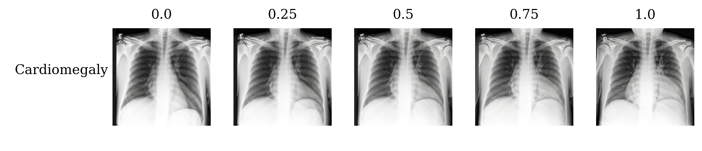
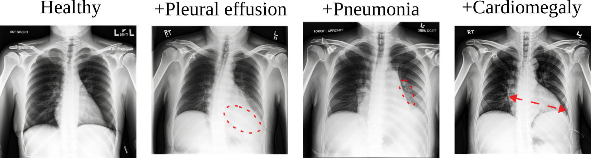
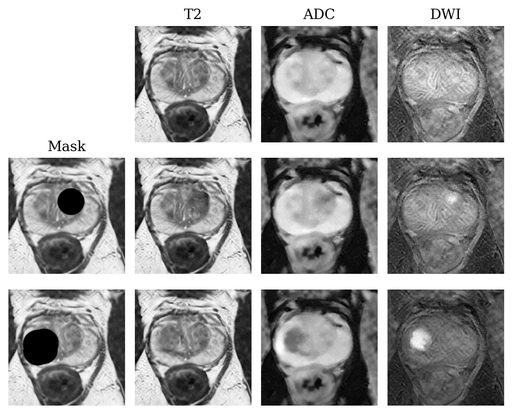

Medical diffusion on a budget
Textual Inversion for medical image generation
Diagnostic Image Analysis Group - Radboudumc
Links
Introduction
Diffusion models are very popular nowadays for text-to-image modeling. They generate great results and show high flexibility in image generation through text prompts. They do, however, require a lot of data and compute. In the medical domain, both of these can be scarce: rare diseases or modalities can have few available scans, and compute inside hospitals is typically not a lot.
In this paper, we explore a fine-tuning strategy Textual Inversion1 for fine-tuning Stable Diffusion2 models towards medical modalities, using just 100 examples on 1 GPU.
Methods

Textual inversion only trains the token embedding vectors for a new concept you introduce to the diffusion model. This results in fast training and compact embeddings (~1MB). In the paper we explore optimal parameters for textual inversion, and experiment with three different modalities: prostate MRI, chest X-ray and histopathology.
Results
Textual inversion parameters
In the original work by Gal et al. embeddings are trained with only a handful examples and have a small size. We find that for medical images it is important to train with about 100 examples and larger embeddings.
Classification
We performed a simple classification experiment, where we train ResNet-18 models on combinations of real and synthetic data for cancer classification on prostate MRI.
| #Real | #Synthetic | AUC ± std - Prostate MRI |
|---|---|---|
| 200 | 0 | 0.780 ± 0.017 |
| 200 | 2000 | 0.803 ± 0.009 |
| 0 | 2000 | 0.766 ± 0.020 |
| 0 | 20003 | 0.562 ± 0.036 |
Adding synthetic cases maintains or improves performance, as visible in row 1/2. For chest X-ray and histopathology we saw no improvement from adding synthetic data.
Using only synthetic data gives small performance drop, as visible in row 3. This shows that our images are diagnostically accurate.
This is further confirmed by row 4, where we train on 10-case embeddings. The classifier performance degrades severely, indicating that the images do not make sense.
Comparison to StyleGAN3
We compared to StyleGAN3 as a baseline, and let an expert prostate radiologist judge images of both models blindly. The radiologist preferred the diffusion model in 36/50 cases.
Disease interpolation
By training two embeddings, healthy and diseased, and using composable prompting, we can interpolate between disease state. For instance, we can prompt the model with “healthy:30% AND diseased:70%” to generate a 70% diseased case. In the example below you can see the heart size gradually grow as you move from healthy to cardiomegaly.

Disease combination
By training embeddings per disease, e.g. pleural_effusion and pneumonia, and using composable prompting, we can combine two diseases. For instance, we can prompt the model with “pleural_effusion AND pneumonia” to generate an case with both pleural effusion and pneumonia present. In the example below you can see an example where we progressively combine diseases in a chest x-ray.

Disease inpainting
By masking a region of a healthy image, and then performing the diffusion process only on the masked region while conditioning the model on a disease embedding, we can generate positive cases with disease present in controlled locations. Here we show an example of prostate MRI, where we inpaint a tumor in two locations for the same initial case.

Try it out!
It’s easy to work with diffusion models these days, and embeddings train quickly. Head over to our code repository to get started!
Footnotes
Gal, Rinon, et al. “An image is worth one word: Personalizing text-to-image generation using textual inversion.” arXiv preprint arXiv:2208.01618 (2022).↩︎
Rombach, Robin, et al. “High-resolution image synthesis with latent diffusion models.” Proceedings of the IEEE/CVF conference on computer vision and pattern recognition. 2022.↩︎
Embedding trained on 10 examples instead of 100↩︎